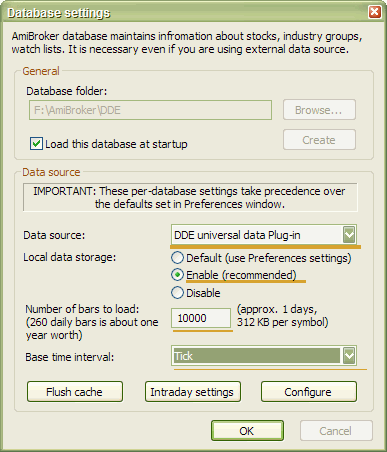
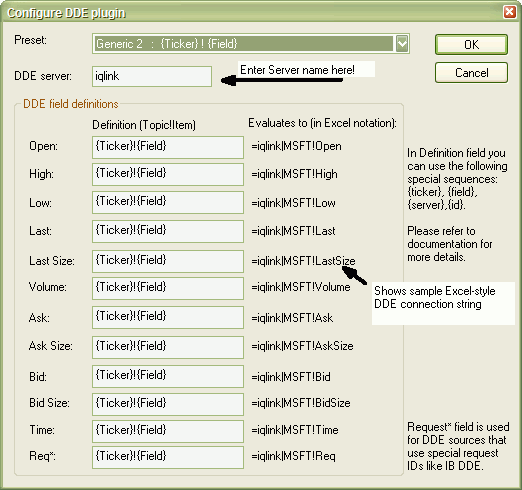

Note: the most recent version of this document can be found at: http://www.amibroker.com/dde.html. Please check this page for updates.
DDE (Dynamic Data Exchange)
is a Windows protocol used to allow applications to exchange data. For
example, when you change a form in your database program or a data item
in a spreadsheet program, they can be configured to also update these forms
or items anywhere they occur in other programs you may use. DDE uses a
client/server model in which the application requesting data is considered
the client and the application providing data is considered the server.
Thousands of applications use DDE, including Microsoft's Excel, Word, Lotus
1-2-3, and Visual Basic.
For more information
about DDE as a communication mechanism in Windows, please follow this link:
http://msdn.microsoft.com/library/en-us/winui/WinUI/WindowsUserInterface/DataExchange/DynamicDataExchange/AboutDynamicDataExchange.asp
What DDE offers for traders? Essentially, real-time streaming quotes. There is NO BACKFILL via DDE. Many real-time data providers and brokerages provide the ability to get real-time data by means of DDE. You should ask your brokerage/real-time data vendor if they offer a DDE link. The DDE plugin now available for AmiBroker allows linking to (almost) any DDE source (server) supplying real-time quotes. This makes it an attractive option for all data sources that do not have a dedicated plugin.
If you are using eSignal, IQFeed, Quote.com, and any other source that has a dedicated plugin - you should use this dedicated plugin instead of DDE. This is so because dedicated plugins are ALWAYS a better option (provide more features and are faster) than generic DDE.
To use DDE data plugin with AmiBroker you need to:


The plugin status indicator
should change from Yellow "WAIT" to Green "OK" within
a few seconds. If it does not turn
to the "OK" state, it means that either:
a) server name and/or
fields are not set up correctly
or
b) DDE server (third-party application) is not running or is not enabled
If the indicator shows "OK" - then real-time quotes flow into AB. You can check it by displaying Window->Real-time quote. Note: Since there is no backfill, you would need to wait for at least 3 bars of data to be collected before a chart shows up.
Various data vendors use different DDE connection strings; here a few typical examples will be shown.
Most documentation of
DDE uses Excel DDE syntax which looks as follows:=SERVER|TOPIC!ITEM
Server is a name of the DDE server such as WINROS, IQLINK, REUTER,
CQGPC, MT, MTLink, etc.
Topic is the topic of DDE conversation. Depending on the data source, the topic
may be just the ticker symbol (like in IQFeed), or the field name (like
in Winros).
Item is the item of DDE conversation. Depending on the data source, it
can be the field name (like in IQFeed) or ticker symbol (like in Winros).
So a DDE connection string in two most common standards looks as follows:
=WINROS|LAST!MSFT
=IQLINK|MSFT!LAST
Now DDE plugin configuration screen looks like this:
In the upper part of the dialog you can see "DDE Server" field.
In this field you should enter the SERVER part
of DDE connection string (=SERVER|TOPIC!ITEM) without
the equation mark and without the '|' character.
Below you can see 12 text entry boxes where you can define DDE topic and item for each data field your data source provides. Here you should enter TOPIC!ITEM pair of the DDE connection string (=SERVER|TOPIC!ITEM) with an exclamation mark between the DDE topic and DDE item.
As you can see in the picture above, the DDE plugin allows you to use a few special strings, namely: {Ticker}, {Field}, {FieldSp}, {Server}, {Id} which are evaluated at runtime for each symbol separately, allowing you to construct dynamic DDE strings (depending, for example, on the selected ticker) required by most data sources:
PREFIX_{Ticker }_SUFFIX!MYTEXT
it will evaluate to =SERVER|PREFIX_MSFT_SUFFIX!MYTEXT (provided that current symbol is MSFT)
Next to the field definitions, you can see what each definition will evaluate to (in Excel notation). This makes it easy to verify if the definition is correct.
Sample evaluation always uses "MSFT" as a {Ticker}, and 34 as {Id}.
If your data source does not provide
all fields, you can leave a given field empty. Note
that for
proper operation, the "Last" price
(the price of the last trade) is required.
If your data source does not provide "last" price
(most Forex sources don't have "last")
you can force the DDE plugin to use "Bid" instead.
For that, you should make the "Last" field
blank and provide the appropriate DDE topic!item
pair in "Bid" field.
Please also note that Topic!Item pairs
should evaluate to unique values.
In the top part of the dialog, you can
see "Preset" combo-box.
As of now, it allows you to preset the fields using two generic schemes:
a)
{Field}!{Ticker} - "last price" evaluates to
=SERVER|Last!MSFT
b) {Ticker}!{Field} - "last price" evaluates to =SERVER|MSFT!Last
In the future "Preset" box will contain more presets for various DDE sources that you submit.
Connection examples are shown on the web page: http://www.amibroker.com/dde.html
DDE plugin has been tested and it is known to work properly on Windows XP (32-bit DDE) and Windows 9x (16-bit DDE). The following DDE servers are verified by us to work properly:
All other DDE servers not listed above should work properly. Contact
support at amibroker.com in case of problems.
In order to help others to configure the DDE plugin for their data vendor, once you succeeded to link with your particular vendor, please drop us a note with a screenshot of the CONFIGURE dialog and the name of the source. This will later be included in this document as a reference on how to use various data sources. Working setups will also be added to "presets" combo for easy, one-click configuration.
1. There is NO BACKFILL in the DDE plugin. You can, however, use the ASCII importer (this includes AmiQuote) to import historical data right into the database that you will later update in real-time using the DDE plugin.
2. Change and % change fields are NOT available (yet)
3. Time and Req fields are now ignored (this may change in the future)
4. The current system time is used to timestamp each tick.
5. When your source does not offer "LAST" price (as several Forex sources do) you should make the "Last" field EMPTY in the configuration dialog. This will tell the plugin to use the "BID" field instead.
6. Plugin status
(connected/disconnected) always initially comes up in the "Wait" state (Yellow indicator).
It means that no DDE conversation has been established. If at least ONE
DDE conversation starts successfully, it will turn to the "OK" state
(green indicator). If the DDE server was not running at the first attempt to connect,
the plugin will NOT attempt to reconnect automatically. Instead, you should
force reconnection manually (see point 7). The indicator may turn to "Disconnected" (red
indicator) only in two cases:
a) you were connected
properly, but the DDE server (third-party app) has been closed
b) you selected "Shutdown" from
the plugin status menu
7. You can reconnect at any time by selecting "Reconnect" from the plugin status menu.